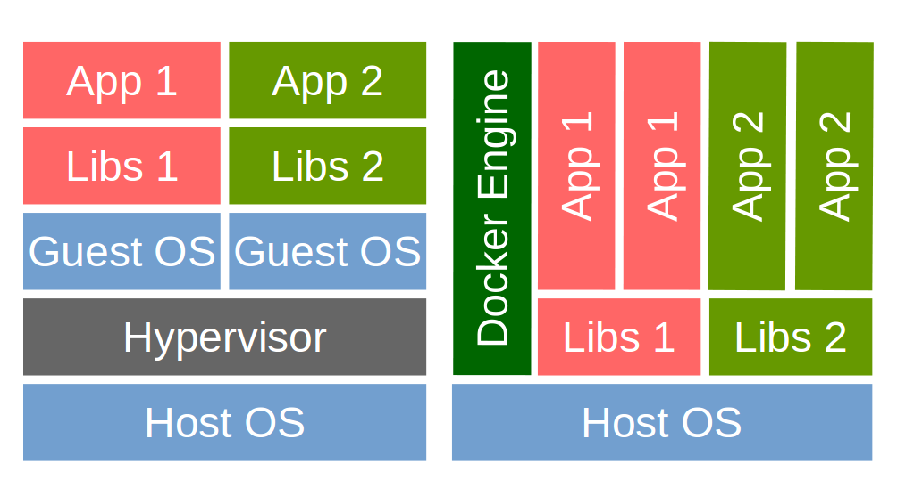
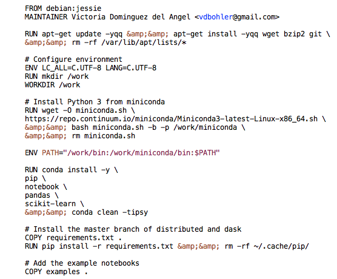
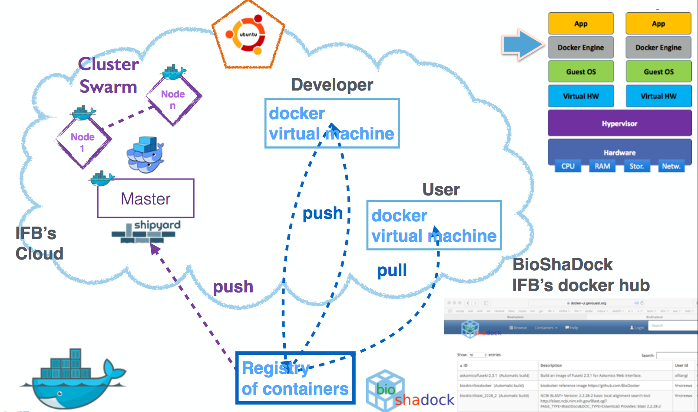
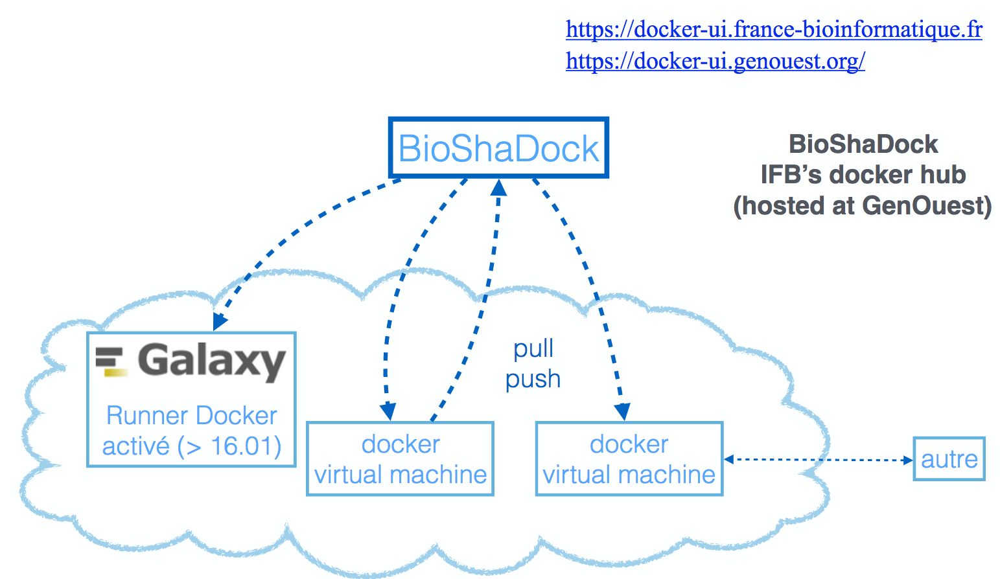
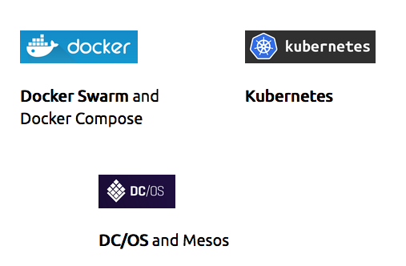

Created by Victoria Dominguez del Angel / @vic_bioinfo

All three: 300 Mb
https://docs.docker.com/engine/installation/
$ ls -la ~/.ssh
$ ssh-keygen -t dsa
$ ls -la ~/.ssh
$ curl -fsSL https://get.docker.com/ | sh
$ systemctl enable docker.service
$ systemctl start docker
$ docker search debian
$ docker pull debian:jessie
$ docker run debian:jessie ls -l
$ docker images
$ docker ps
$ docker run --rm python:3.5 python -c "print(40 + 2)"
Unable to find image 'python:3.5' locally
latest: Pulling from library/python
357ea8c3d80b: Already exists
52befadefd24: Pull complete
3c0732d5313c: Pull complete
ceb711c7e301: Downloading [=========>
] 90.27 MB/129.7 MB
4211bb537697: Download complete
71f9074c0739: Download complete
3e5349707036: Download complete
$ docker run --rm python:3.5 python -c "print(40 + 2)"
Unable to find image 'python:3.5' locally
latest: Pulling from library/python
357ea8c3d80b: Already exists
52befadefd24: Pull complete
3c0732d5313c: Pull complete
ceb711c7e301: Pull complete
4211bb537697: Pull complete
71f9074c0739: Pull complete
3e5349707036: Pull complete
Digest: sha256:a755ad5a30b2[...]
Status: Downloaded newer image for python:3.5
42
$ docker run --rm python:3.5 python -c "print(40 + 3)"
43
$ docker run --rm -ti python:3.5 bash
root@10d2dfedb935:/# ps
PID TTY TIME CMD
1 ? 00:00:00 bash
8 ? 00:00:00 ps
root@10d2dfedb935:/# python
Python 3.5.2 (default, Aug 9 2016, 20:58:38)
[GCC 4.9.2] on linux
>>> 40 + 2
42
>>> ^D
root@10d2dfedb935:/# exit
$ docker ps #shows running containers
$ docker inspect #info on a container (incl. IP address)
$ docker logs #gets logs from container
$ docker events #gets events from container
$ docker port #shows public facing port of container
$ docker top #shows running processes in container
$ docker diff #shows changed files in container's FS
$ docker stats #shows metrics, memory, cpu, filsystem
$ docker run -it --rm ubuntu # Run a container interactively
$ docker run -d hadoop # Run a container in the background
$ docker run -p 80 nginx #Publish container port 80 on a random port
$docker run -d -p 80:80 -p 8021:21 bgruening/galaxy-stable
FROM ubuntu:16.04
MAINTAINER Victoria Dominguez del Angel <vdbohler@gmail.com>
RUN apt-get update -y
RUN apt-get install curl -y && apt-get install vim -y

$ docker build -t vdda/distributed .
Sending build context to Docker daemon 178.2 kB
Step 1 : FROM ubuntu:16.04
---> 1b01529cc499
Step 2 : MAINTAINER Victoria Dominguez del Angel <vdbohler@gmail.com>
---> Using cache
---> 37887ee139f1
Step 3 : RUN apt-get install curl -y && apt-get install vim -y
---> Using cache
---> 3c2b8caccb80
[...]
$ docker build -t vdda/distributed .
Sending build context to Docker daemon 178.2 kB
Step 1 : FROM ubuntu:16.04
---> 1b01529cc499
Step 2 : MAINTAINER Victoria Dominguez <vdbohler@gmail.com>
---> Using cache
---> 37887ee139f1
Step 3 : RUN apt-get install curl -y && apt-get install vim -y
---> Using cache
---> 3c2b8caccb80
$ docker run --rm vdda/distributed ls
$ docker push vdda/distributed


